Директор по закупкам — ключевая фигура в системе корпоративных закупок и управления снабжением. От его компетенций зависит эффективность проведения закупок товаров, контроль процессов снабжения и результативность работы отдела закупок. Чтобы уверенно управлять службой снабжения и отделом закупок, руководителям необходимо регулярно проходить обучение, развивать профессиональные навыки и осваивать современные методы управления закупками. Сегодня это возможно в удобном дистанционном формате: программы повышения квалификации, курсы повышения и дистанционные образовательные программы позволяют изучать стратегии закупки, процедуры закупок и особенности осуществления закупок в сфере государственных и коммерческих проектов. Мы составили рейтинг лучших предложений для руководителей отдела и специалистов закупочной сферы, где обучение проводится онлайн и включает практические навыки, необходимые для успешного прохождения курсов и получения диплома установленного образца.
Информация обновлена:
ТОП онлайн-курсов обучения на директора по закупкам
- 🏆 Директор по закупкам — Академия Eduson (по промокоду kursy скидка 🎁 5%)
- 🏆 MBA: Управление коммерцией и закупками – Академия Eduson (по промокоду kursy скидка 🎁 5%)
- 🏆 Mini MBA «Управление в сфере закупок» — Московская Бизнес Академия (по промокоду onlinekursy скидка 🎁 10%)
- Директор по снабжению — Русская Школа Управления
- Практикум по закупкам и снабжению – Русская Школа Управления
- Управление снабжением для руководителя – Русская Школа Управления
- Директор по закупкам и снабжению – City Business School
- Директор по закупкам и снабжению – Moscow Business School
- Управление снабжением и закупками. MBA Professional — Moscow Business School
- Деятельность по осуществлению, контролю и управлению закупками — АНО ДПО «НАДПО» (по промокоду onlinekursy действует скидка 🎁 5%)
- Специалист в сфере закупок (340 часов) — АНО «НИИДПО»
- Деятельность по осуществлению, контролю и управлению закупками — НИПКЭФ
- Управление государственными и муниципальными закупками по 44-ФЗ для руководителя — Контур.Школа
- Руководитель службы закупок и снабжения — Учебный центр «НЦПО»
Бесплатные курсы обучения на директора по закупкам
Отличительные преимущества каждой дистанционной программы обучения по управлению закупками для руководителей
| № | Название курса и школа | Отличительные преимущества | |
|---|---|---|---|
| 🥇 | Директор по закупкам — Академия Eduson | Пожизненный доступ к материалам и обновлениям, дипломы гос. образца, эксперты международного уровня (Ицхак Адизес, Чарльз Крэйвер), акцент на BI-аналитику и автоматизацию, гибкий формат без дедлайнов. | Перейти |
| 🥈 | MBA: Управление коммерцией и закупками — Академия Eduson | Гарвардский кейсовый метод, 27 кейсов ведущих компаний, поддержка 38 экспертов, дипломы гос. образца, индивидуальные кураторы, ориентирован на стратегическое управление и коммерческую логику. | Перейти |
| 🥉 | Mini MBA «Управление в сфере закупок» — Московская Бизнес Академия | Международный диплом с занесением в ФРДО, 70% практики, итоговый проект, обновление программы 2025 года, карьерная поддержка, гибкая рассрочка до 24 месяцев. | Перейти |
| 4 | Директор по снабжению — Русская Школа Управления | Соответствие профстандартам Минтруда, 70% времени практические кейсы, матрицы взаимодействия снабжения с другими отделами, итоговое онлайн-тестирование, диплом гос. образца. | Перейти |
| 5 | Практикум по закупкам и снабжению — Русская Школа Управления | 70% практики, корпоративный формат возможен, обучение в удобное время (30–180 дней), реальные кейсы по переговорам и автоматизации, документ гос. образца. | Перейти |
| 6 | Управление снабжением для руководителя — Русская Школа Управления | Программа 70% практика и 30% теория, ABC/XYZ-анализ, стратегия непрерывных закупок, 4 модуля по 10 уроков, рейтинг 4.9 с 7000+ слушателями. | Перейти |
| 7 | Директор по закупкам и снабжению — City Business School | Международный диплом CBS, гибкий тариф (переподготовка или повышение квалификации), модуль по ИИ в снабжении (обновление 2025), доступ 24/7, закрытое сообщество выпускников. | Перейти |
| 8 | Директор по закупкам и снабжению — Moscow Business School | Интенсив за 4 дня, выбор формата (очно/дистанционно), акцент на антикоррупционную безопасность, 85% выпускников получают повышение, документы гос. образца. | Перейти |
| 9 | Управление снабжением и закупками. MBA Professional — Moscow Business School | Полноценный диплом MBA гос. образца + Diploma Supplement, 14 месяцев обучения, деловые игры и стратегические квесты, безлимитный доступ к дополнительным курсам MBS, бизнес-клуб выпускников. | Перейти |
| 10 | Деятельность по осуществлению, контролю и управлению закупками — НАДПО | 540 часов (4 месяца), кэшбэк и рассрочка 0% без переплат, доступ к библиотекам ЛитРес и Библиоклуб, диплом гос. образца, большой блок практики (30% курса). | Перейти |
| 11 | Специалист в сфере закупок (340 часов) — НИИДПО | Бессрочный доступ к материалам и архиву вебинаров, диплом + сертификат компетенций, ускоренный формат (8 недель), одна из самых доступных цен, подходит новичкам. | Перейти |
| 12 | Деятельность по осуществлению, контролю и управлению закупками — НИПКЭФ | 540 часов, диплом гос. образца, рассрочка до 35 мес без переплат, акцент на антимонопольное регулирование и этику делового общения, обучение полностью дистанционно. | Перейти |
| 13 | Управление государственными и муниципальными закупками по 44-ФЗ для руководителя — Контур.Школа | 40 академических часов, программа строго по 44-ФЗ, скидка 10% при онлайн-оплате, преподаватели-эксперты из Сбербанк-АСТ и ВШЭ, упор на практику закупочных комиссий. | Перейти |
| 14 | Руководитель службы закупок и снабжения — НЦПО | От 250 до 1600 часов, диплом гос. образца с внесением в ФРДО, доступ к материалам навсегда, цена ниже средней по рынку, официальная лицензия Минобрнауки, доставка документов бесплатно. | Перейти |
1. 🏆 Директор по закупкам — Академия Eduson
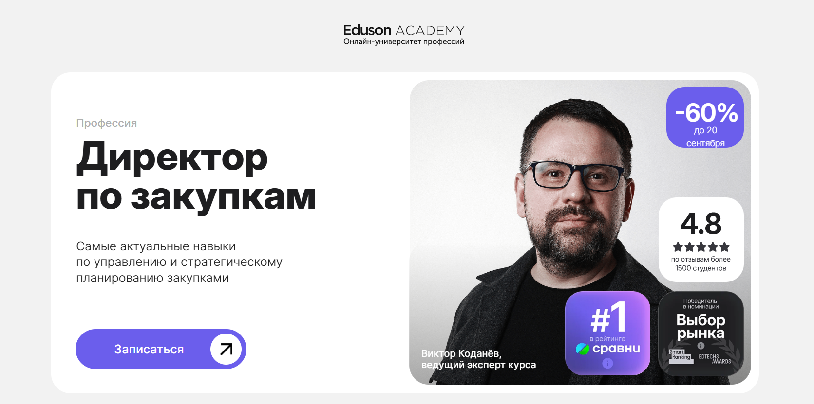
- ✅ Официальный сайт: eduson.academy
- 💸 Цена: 109 000 ₽ (со скидкой 60%)
- 💳 Рассрочка: от 9 133 ₽/мес на 12 месяцев без переплат, налоговый вычет 13%
- 📚 Формат: дистанционное образование — видеолекции, домашние задания, бизнес-кейсы, онлайн-тренажёры
- ⏳ Продолжительность: обучение проходит в удобном графике без дедлайнов
- 📜 Документ: выдаются дипломы о профессиональной переподготовке и удостоверения государственного образца
- 📝 Трудоустройство: помощь в подготовке резюме, карьерные консультации, участие в корпоративных программах
- 🔷 Для кого подходит курс: руководителям отдела закупок и снабжения, специалистам по корпоративным закупкам, менеджерам по развитию
Особенности:
Программа разработана в 2025 году с учётом требований рынка и изменений законодательства. Обучение проводится дистанционным форматом, что позволяет совмещать процессу обучения с работой. Включает реальные кейсы по процедурам закупок и управлению цепями поставок. Студенты получают доступ к актуальным учебным материалам, а также пожизненный доступ к обновлениям курса. После успешного прохождения итоговых заданий слушатель получает документы государственного образца. Важной частью курса является обучение методам управления службой снабжения, стратегиями закупки и автоматизацией процессов. Предусмотрены индивидуальные консультации и бизнес-разборы с экспертами. Это удобный формат обучения для тех, кто хочет повысить квалификацию в сфере закупок товаров и услуг.
Чему учатся студенты:
- выстраивать стратегию управления закупками и отделом снабжения
- проводить процедуры закупок и тендеров
- работать с выбором поставщиков и построением долгосрочных отношений
- осуществления закупок в сфере государственных и муниципальных контрактов
- использовать цифровые инструменты и BI-аналитику для повышения эффективности
- управлять процессами снабжения, логистикой и бюджетированием
- готовить документацию по требованиям законодательства и 44-ФЗ, 223-ФЗ
Преподаватели:
- Виктор Коданёв — ведущий эксперт, директор по образованию и консалтингу ЭТП Bidzaar, признан лучшим директором по закупкам (RAEX)
- Александр Горбунов — суперфиналист конкурса «Лидеры России»
- Татьяна Углова — HRD российско-китайской компании в агробизнесе
- Михаил Тузов — руководитель бизнес-аналитики в Manpower
- Алексей Батурин — сооснователь Novo BI, автор систем прогнозирования
- Ицхак Адизес — основатель Института Адизеса, входит в топ-10 мировых консалтинговых компаний
- Рената Кулесская — эксперт по автоматизации закупочных процессов в «B2B-Center»
- Оксана Анисимова — более 20 лет опыта в категорийном управлении и снабжении
- Чарльз Крэйвер — профессор Университета Джорджа Вашингтона
- Андрей Мышкин — директор по развитию закупочных систем в «B2B-Центр»
Преимущества:
- удобная дистанционная форма обучения с любым графиком
- пожизненный доступ к материалам и обновлениям
- индивидуальные консультации и разборы бизнес-кейсов
- документы государственного образца после окончания курса
- акцент на практических навыках проведения закупок и управления снабжением
- поддержка экспертов с опытом работы в международных компаниях
- подходит для повышения квалификации и карьерного роста
Отзывы учеников:
Студенты отмечают удобный формат обучения онлайн, доступные учебные материалы и быстрый отклик кураторов. Большим плюсом называют практические задания, которые помогают закрепить знания в реальной закупочной сфере. Отмечают полезные консультации и возможность проходить обучение в удобное время. Высоко оценивается стоимость курса с учётом рассрочки и качества образовательных услуг.
Перейти на официальный сайт курса2. 🏆 MBA: Управление коммерцией и закупками – Академия Eduson
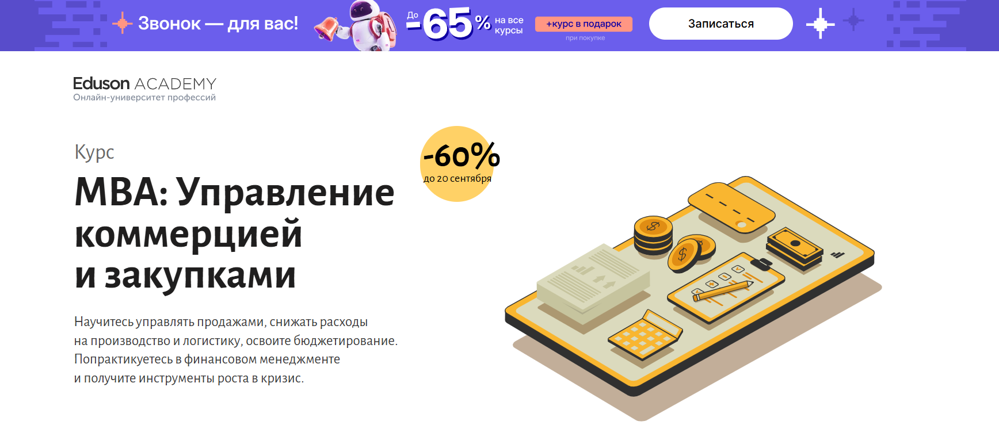- ✅ Официальный сайт: eduson.academy
- 💸 Цена: 168 000 ₽ (со скидкой -60%).
- 💳 Рассрочка: беспроцентная на 12 месяцев от 14 000 ₽ в месяц.
- 📚 Формат: дистанционное образование — видеолекции, кейсы, практические задания, тренажёры, домашние работы, сессии с экспертами.
- ⏳ Продолжительность: 246 академических часов, более 270 уроков.
- 📜 Документ: диплом о профессиональной переподготовке и удостоверение о повышении квалификации государственного образца.
- 📝 Трудоустройство: помощь в карьерном росте, выпускники получают работу в крупных компаниях.
- 🔷 Для кого подходит курс: руководителям отдела снабжения, менеджерам среднего звена, собственникам бизнеса и директорам по закупкам.
Особенности:
Программа создана для руководителей и специалистов сферы закупок, коммерческой логистики и снабжения. Обучение проходит онлайн в удобном формате, без жесткой привязки к расписанию. В основу курса лег кейсовый метод Гарвардской школы бизнеса, что позволяет участникам анализировать реальные бизнес-ситуации и вырабатывать эффективные решения. Студенты проходят практику на примере 27 кейсов ведущих компаний, а также получают поддержку от 38 экспертов мирового уровня. Каждому слушателю предоставляется личный куратор и индивидуальная консультация. По окончании обучения выдаются дипломы и удостоверения государственного образца, подтверждающие квалификацию в управлении закупками и коммерческими процессами.
Чему учатся студенты:
- Создавать и управлять отделом продаж и снабжения
- Разрабатывать стратегию закупок и финансового планирования
- Оценивать эффективность бизнес- и инвестиционных проектов
- Управлять процессами логистики и отделом закупок товаров
- Формировать маркетинговую стратегию и использовать KPI
- Разбираться в электронной коммерции и стратегиях закупки
- Организовывать процессы снабжения и проведения закупок
- Управлять проектами и снижать расходы на логистику
Преподаватели:
- Яна Куренчанина — бизнес-аналитик, консультант, руководитель IT-проектов
- Лидия Ткачева — ex-финансовый директор, квалификация ICFM
- Ицхак Калдерон Адизес — основатель Института Адизеса, входит в топ-10 консалтинговых компаний мира
- Ринат Мухаметвалеев — коммерческий директор федеральной сети «Перекрёсток»
- Татьяна Лукина — консультант по стратегии, MBA РАНХиГС
- Роман Лашкул — руководитель GR-проектов в Ozon, ex-менеджер P&G
- Борис Федоров — руководитель отдела дистанционных сервисов Газпромбанка
- Евгений Кромский — эксперт CFA, FCCA, преподаватель финансов
Преимущества:
- Удобная дистанционная форма обучения с доступом к материалам навсегда
- Личный куратор и индивидуальная консультация для каждого участника
- 27 практических бизнес-кейсов на примере крупных компаний
- Скидка 60% при оплате до 20 сентября
- Официальные дипломы и удостоверения о повышении квалификации
- Поддержка экспертов-практиков из ведущих бизнес-школ мира
Отзывы учеников:
Студенты отмечают практическую пользу и удобный график обучения. Чаще всего выделяют доступ к материалам в любое время, поддержку кураторов и возможность сразу применять полученные знания на работе. Высоко оценивают преподавателей, которые дают ценные рекомендации и реальные примеры из практики. Средний рейтинг курсов Eduson — 4,7 из 5.
Перейти на официальный сайт курса3. 🏆 Mini MBA «Управление в сфере закупок» — Московская Бизнес Академия
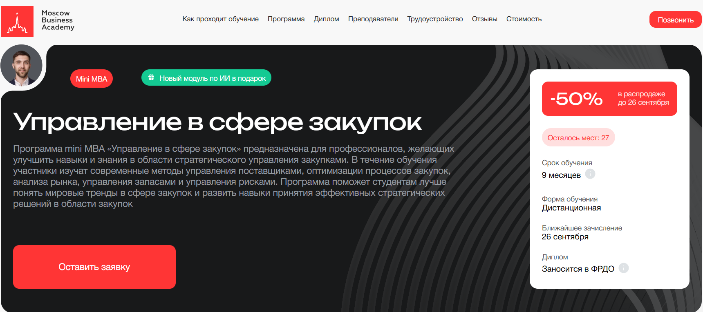- ✅ Официальный сайт: moscow.mba
- 💸 Цена: 206 450 ₽(со скидкой 50%).
- 💳 Рассрочка: 8 602 ₽/мес до 24 месяцев без переплаты, первый платёж через месяц.
- 📚 Формат: дистанционное образование, видеоматериалы, практические задания, итоговый проект, онлайн-вебинары, обратная связь от преподавателей и кураторов.
- ⏳ Продолжительность: 9 месяцев.
- 📜 Документ: престижный международный диплом государственного образца, заносится в ФРДО.
- 📝 Трудоустройство: помощь в составлении резюме, подготовка к собеседованиям, рекомендации по поиску клиентов.
- 🔷 Для кого подходит курс: специалистам отдела закупок и снабжения, руководителям подразделений, менеджерам, а также тем, кто планирует освоить новую профессию в закупочной сфере.
Особенности:
Программа ориентирована на получение практических навыков в сфере закупок и снабжения с удобной дистанционной формой обучения. Студенты изучают методы управления поставщиками, современные стратегии закупки, а также законодательство в области государственных закупок. Обучение проходит онлайн, что позволяет совмещать его с работой и другими делами. Программа регулярно обновляется, последнее обновление — 2025 год, что гарантирует актуальность материалов. Образовательный процесс построен так, чтобы слушатели получили знания, применимые в реальной практике, включая проведение процедур закупок и планирование бюджета. Важной особенностью является возможность применения теоретических знаний в рамках итогового проекта, что позволяет закрепить профессиональные компетенции. После окончания курса выпускники получают диплом установленного образца и доступ к карьерным консультациям.
Чему учатся студенты:
- Стратегическому планированию закупок
- Управлению поставщиками и процессами снабжения
- Анализу рынка и оценке эффективности закупочных процессов
- Законам и процедурам государственных закупок по 44-ФЗ и 223-ФЗ
- Контрактной системе и ведению тендеров
- Навыкам переговоров и эффективному взаимодействию с партнёрами
Преподаватели:
- Ицхак Пинтосевич — эксперт по личностному росту, бизнес-тренер, автор 15 книг-тренингов
- Алексей Матушкин — магистр инноваций и социологии, преподаватель и лингво-коуч, член ассоциации IATEFL
- Ангелина Шам — корпоративный бизнес-психолог, кандидат наук, автор книг по психологии и коммуникации
Преимущества:
- Удобный график обучения и доступ из любой точки мира
- 70% программы — практика на основе реальных рабочих задач
- Диплом государственного образца заносится в ФРДО
- Карьерная поддержка и помощь в трудоустройстве
- Преподаватели — практикующие эксперты с большим опытом
- Возможность пройти курсы повышения квалификации и получить профессиональную переподготовку
Отзывы учеников:
Слушатели отмечают доступность учебных материалов, качественную организацию учебного процесса и удобный дистанционный формат. Студенты подчеркивают практическую направленность программы и возможность сразу применять знания в работе. Положительно оценивают поддержку преподавателей и кураторов, а также помощь академии в трудоустройстве.
Перейти на официальный сайт курса4. Директор по снабжению — Русская Школа Управления
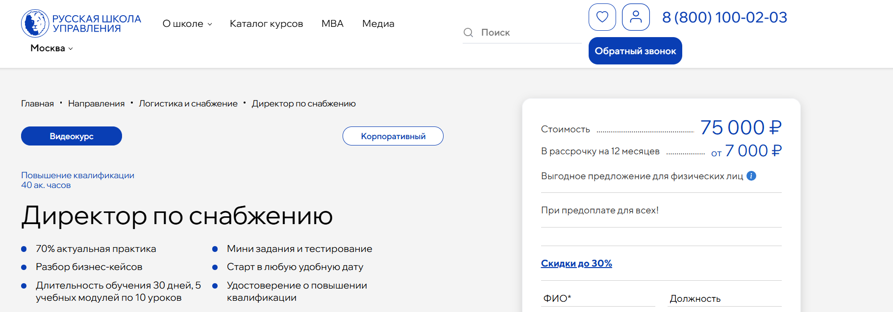- ✅ Официальный сайт: uprav.ru
- 💸 Цена: 75 000 ₽
- 💳 Рассрочка: 7 000 ₽/мес до 12 месяцев
- 📚 Формат: дистанционное обучение, 5 модулей по 10 уроков, практикум, мини-задания и тестирование
- ⏳ Продолжительность: 30 дней, старт в любое удобное время
- 📜 Документ: удостоверение о повышении квалификации государственного образца
- 📝 Трудоустройство: применение полученных знаний для карьерного роста и повышения эффективности работы отдела снабжения
- 🔷 Для кого подходит курс: руководителям отдела закупок и снабжения, специалистам по корпоративным закупкам, менеджерам по логистике и тем, кто связан с процессами снабжения
Особенности:
Образовательная программа создана по требованиям Минтруда РФ и соответствует профессиональным стандартам сферы закупок. Обучение проходит онлайн с удобным графиком обучения, что позволяет совмещать с работой. Курс сочетает теорию и практику: 70% времени отведено разбору бизнес-кейсов и практическим заданиям. Программа включает актуальные темы — от оптимизации процессов снабжения и управления закупками до взаимодействия с поставщиками и проведения процедур закупок. Слушатели получают доступ к учебным материалам, проходят итоговое тестирование и по окончании курса получают удостоверение установленного образца. Важная часть обучения — практика по матрицам взаимодействия отделов снабжения с логистикой, маркетингом, продажами и финансами. Такой подход позволяет закрепить профессиональные навыки и повысить квалификацию в сфере корпоративных закупок.
Чему учатся студенты:
- Определять роль логистики и снабжения в повышении эффективности бизнеса
- Применять современные стратегии закупки и IT-технологии в управлении
- Разрабатывать системы управления запасами и снижать издержки
- Вести переговоры с поставщиками и добиваться выгодных условий
- Управлять закупками и процессами снабжения на основе процессного подхода
- Оценивать и выбирать поставщиков, противостоять манипуляциям
Преподаватели:
- Потапов Сергей Сергеевич — директор по логистике международной промышленной компании, бизнес-консультант
- Королев Виктор Сергеевич — эксперт-практик в области закупок и логистики, бизнес-тренер, консультант
- Дубровская Дарья Николаевна — эксперт по бизнес-процессам и логистике, основатель консалтингового центра
Преимущества:
- Программа соответствует требованиям законодательства РФ
- Слушатель получает удостоверение о повышении квалификации
- Курс доступен в дистанционном формате с любым удобным графиком
- 70% программы посвящено практическим кейсам и реальным ситуациям
- Опытные преподаватели с практическим опытом в управлении закупками
- Возможность прохождения итоговых тестов онлайн и получения документа дистанционно
Отзывы учеников:
Слушатели отмечают практическую направленность занятий, доступность учебных материалов и удобство дистанционного формата обучения. Многие подчеркивают ценность реальных кейсов и примеров из практики, а также профессионализм преподавателей. По итогам прохождения курсов выпускники внедряют полученные знания в работу отдела снабжения, оптимизируют процессы закупок и отмечают рост профессионального уровня.
Перейти на официальный сайт курса5. Практикум по закупкам и снабжению – Русская Школа Управления
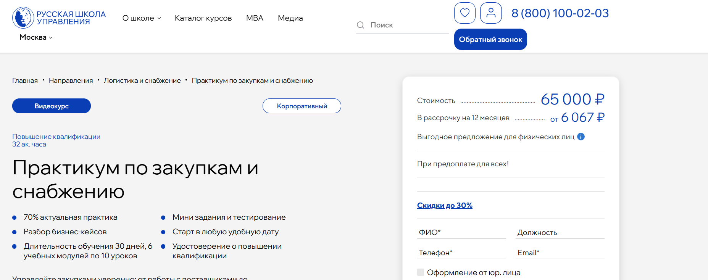
- ✅ Официальный сайт: uprav.ru
- 💸 Цена: 65 000 ₽
- 💳 Рассрочка: 6 067 ₽/мес до 12 месяцев
- 📚 Формат: видеоуроки, мини-задания, тестирование, бизнес-кейсы
- ⏳ Продолжительность: 30 дней, 6 модулей по 10 уроков
- 📜 Документ: удостоверение о повышении квалификации государственного образца
- 📝 Трудоустройство: повышение профессионального уровня, карьерный рост, востребованность в отделах закупок и снабжения
- 🔷 Для кого подходит курс: для специалистов и руководителей службы снабжения, менеджеров отдела закупок, а также для компаний с корпоративных закупок
Особенности:
Обучение проводится в дистанционном формате, что позволяет подстроить график под любые условия работы. Слушатели получают доступ к практическим материалам, а также изучают современные методы ведения переговоров с поставщиками и автоматизации логистики. Программа сочетает 70% практических занятий и 30% теории. Курс помогает освоить инструменты для стратегий закупки и эффективного управления процессами снабжения. После успешного прохождения итоговых тестов участники получают документ установленного образца. Доступ к платформе возможен на срок от 30 до 180 дней, что удобно для прохождения обучения в своем темпе. Программа соответствует требованиям законодательства и стандартам профессионального образования. Уже более 4600 слушателей прошли обучение и отметили удобный формат занятий.
Чему учатся студенты:
- Определять ключевые стратегии закупочных процессов
- Применять ИТ-решения для логистики и управления запасами
- Эффективно работать с поставщиками и избегать манипуляций
- Оценивать и анализировать поставщиков для выбора лучших условий
- Разрабатывать системы управления запасами и прогнозировать объемы закупок товаров
- Изучать основы логистического менеджмента и планирования
- Понимать особенности проведения закупок и государственных процедур
Преподаватели:
- Потапов Сергей Сергеевич: директор по логистике международной компании, бизнес-консультант, преподаватель-практик
- Королев Виктор Сергеевич: эксперт-практик, бизнес-тренер по закупкам, логистике, ВЭД, категорийному менеджменту
- Шипилова Дария Игоревна: бизнес-консультант, руководитель службы логистики федеральной компании
Преимущества:
- Обучение проходит онлайн с доступом к системе дистанционного образования
- Удобный график обучения и возможность начать в любую дату
- Документы об окончании соответствуют требованиям законодательства
- Программа построена на практическом опыте экспертов
- Подходит для корпоративных заказчиков и индивидуальных слушателей
- Доступна рассрочка с комфортной стоимостью обучения
Отзывы учеников:
Слушатели отмечают полезные материалы и практические кейсы, которые помогают применять знания в работе. Часто подчеркивают удобный формат обучения и простоту прохождения курсов в дистанционном формате. Многие студенты отмечают рост профессиональных навыков и карьерные возможности после завершения курса.
Перейти на официальный сайт курса6. Управление снабжением для руководителя – Русская Школа Управления
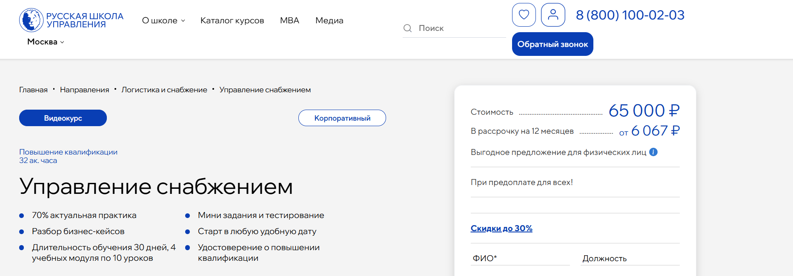- ✅ Официальный сайт: uprav.ru
- 💸 Цена: 65 000 ₽.
- 💳 Рассрочка: предоставляется до 12 месяцев от 6 067 ₽/мес.
- 📚 Формат: дистанционное обучение, видеоуроки, практические задания, тестирование.
- ⏳ Продолжительность: 30 дней, 4 модуля по 10 уроков.
- 📜 Документ: удостоверение о повышении квалификации государственного образца.
- 📝 Трудоустройство: помогает руководителям отдела закупок повысить профессиональные компетенции для карьерного роста.
- 🔷 Для кого подходит курс: руководителям отдела снабжения, специалистам в сфере закупок, менеджерам по логистике и контрактным службам.
Особенности:
Программа обучения сочетает 70% практики и 30% теории, что позволяет слушателям получить необходимые навыки для управления снабжением и закупочными процессами. Участники изучают модели службы снабжения, анализируют их преимущества и недостатки, учатся оптимизировать процессы снабжения и контролировать закупки товаров. В курс включены практикумы по переговорам с поставщиками и работе с матрицами, что формирует умение вести эффективное взаимодействие. Дистанционный формат обучения дает возможность проходить курс по удобному графику и совмещать учебный процесс с профессиональной деятельностью. После окончания курса выдается удостоверение установленного образца, а все данные фиксируются в федеральном реестре. Благодаря системе дистанционного образования студенты получают доступ к материалам и заданиям из любой точки страны.
Чему учатся студенты:
- Определять ключевые показатели эффективности отдела закупок и службы снабжения
- Применять стратегии закупки и методы взаимодействия с поставщиком
- Проводить ABC и XYZ-анализы для управления запасами
- Рассчитывать оптимальные объемы поставок и минимизировать неликвиды
- Разрабатывать стратегию непрерывных закупок для компании
- Использовать методы управления складом и логистикой
Преподаватели:
- Потапов Сергей Сергеевич — директор по логистике международной промышленной компании, бизнес-консультант, преподаватель-практик
- Королев Виктор Сергеевич — эксперт-практик, бизнес-тренер по закупкам, логистике, ВЭД, категорийному менеджменту и управлению цепями поставок
- Дубровская Дарья Николаевна — эксперт по бизнес-процессам и логистике, основатель «Консалтингового центра Дарьи Дубровской»
Преимущества:
- Удобный дистанционный формат обучения
- Рейтинг курса 4.9 и более 7000 слушателей
- Программа основана на реальных бизнес-кейсах
- Гарантированное удостоверение о повышении квалификации государственного образца
- Доступ к демо-уроку и пробным материалам
- Возможность обучения по индивидуальному графику
Отзывы учеников:
Слушатели отмечают практическую направленность программы и удобный формат обучения. Многие подчеркивают, что курс помогает освоить современные методы проведения закупок, научиться эффективным переговорам с поставщиками и снизить издержки компании. Руководители и специалисты выделяют пользу от реальных примеров и прикладных заданий, которые можно применять в работе сразу после прохождения курса.
Перейти на официальный сайт курса7. Директор по закупкам и снабжению – City Business School
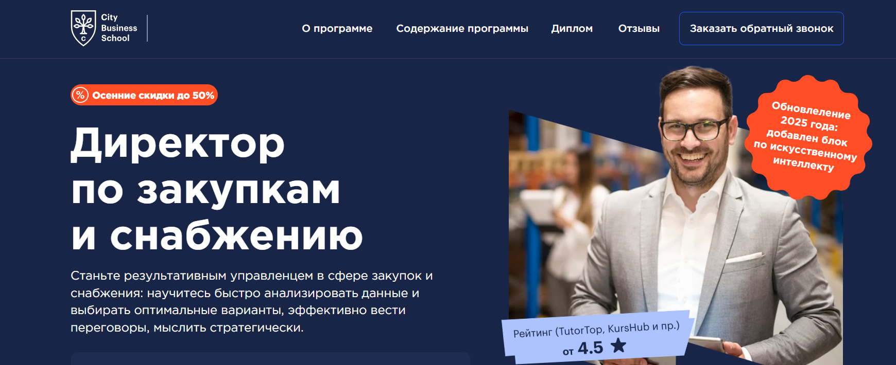- ✅ Официальный сайт: lp.e-mba.ru
- 💸 Цена обучения: от 58 000 ₽ до 98 000 ₽ (в зависимости от пакета).
- 💳 Рассрочка: до 24 месяцев, от 2 417 ₽ в месяц.
- 📚 Формат: дистанционное обучение, видеолекции, кейсы, практические задания, тесты, доступ 24/7.
- ⏳ Продолжительность: от 3 до 6 месяцев.
- 📜 Документ: диплом о профессиональной переподготовке или удостоверение о повышении квалификации (в зависимости от тарифа).
- 📝 Трудоустройство: помощь в карьерном росте, доступ к сообществу выпускников и работодателей.
- 🔷 Для кого подходит курс: руководителям отдела закупок и снабжения, директорам по производству, собственникам бизнеса, специалистам в сфере корпоративных закупок.
Особенности:
Программа ориентирована на специалистов и руководителей, которые хотят повысить квалификацию в сфере закупок и снабжения. Обучение проходит онлайн в удобном дистанционном формате, что позволяет совмещать учебный процесс с профессиональной деятельностью. Студенты осваивают стратегии управления закупочными процессами, методы взаимодействия с поставщиками и современные инструменты автоматизации. Курс включает практику на кейсах международных компаний, что помогает отрабатывать навыки в реальных условиях. По окончании обучения участники получают документы государственного образца и международный диплом CBS. Удобный график обучения дает возможность проходить курсы в любом темпе, а доступ к материалам сохраняется 24/7. Обновление 2025 года включает модуль по искусственному интеллекту в управлении снабжением. После завершения курса выпускники получают возможность вступить в закрытое сообщество специалистов и наладить профессиональные связи.
Чему учатся студенты:
- Стратегиям закупки и оптимизации расходов
- Эффективным переговорам с поставщиками
- Планированию бюджета логистики и снабжения
- Управлению рисками и международными поставками
- Использованию BI-инструментов и цифровых платформ
- Развитию лидерских и управленческих навыков
Преподаватели:
- Антон Мартьянов — эксперт в Digital Supply Chain Management
- Ксения Ильянович — бизнес-тренер, стратегический менеджер
- Александр Шпаченко — эксперт в управлении персоналом
- Артем Близнюк — специалист по управлению рисками
- Инна Шкилева — эксперт по корпоративным финансам
- Анна Макушева — директор по маркетингу логистической компании IML
- Юлия Борисова — эксперт по автоматизации закупочных процессов
- Егор Газетин — руководитель IT-компании, эксперт в факторинге
- Александр Гревцев — директор по ИТ корпорации Казахмыс
- Ирина Сазонова — преподаватель MBA и президентских программ
Преимущества:
- Возможность пройти обучение онлайн в удобной дистанционной форме
- Документы государственного и международного образца
- Практические кейсы и задания, приближенные к рабочим ситуациям
- Гибкий график обучения с доступом к материалам 24/7
- Поддержка преподавателей и кураторов на протяжении всего обучения
- Закрытое сообщество выпускников для обмена опытом и поиска партнеров
Отзывы учеников:
Студенты отмечают удобный формат обучения, полезные кейсы и большое количество практических заданий. Многие подчеркивают, что после прохождения курсов повысили квалификацию и получили новые карьерные возможности. Также положительно оценивается профессионализм преподавателей и доступ к международному опыту в сфере корпоративных закупок.
Перейти на официальный сайт курса8. Директор по закупкам и снабжению – Moscow Business School
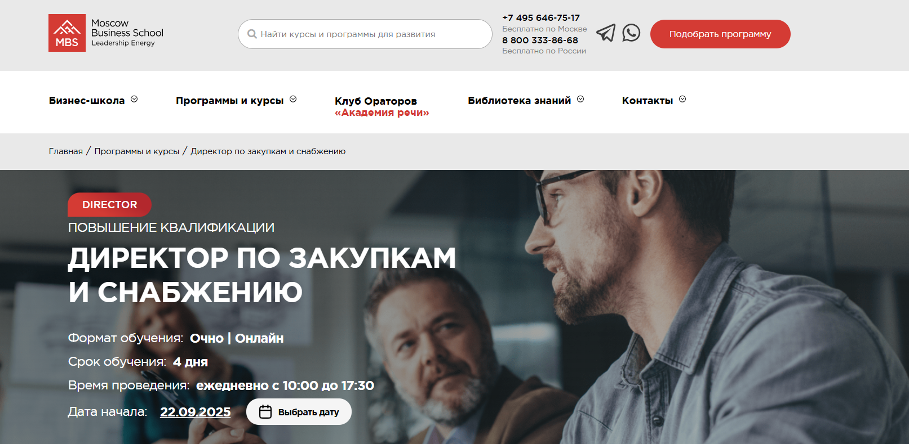- ✅ Официальный сайт: mbschool.ru
- 💸 Цена: 65 900 ₽
- 💳 Рассрочка: доступна для слушателей программы от 2 746 ₽/мес
- 📚 Формат: очные и дистанционные занятия, видеолекции, тесты, практические кейсы
- ⏳ Продолжительность: 4 дня (ежедневно с 10:00 до 17:30)
- 📜 Документ: удостоверение о повышении квалификации или сертификат MBS
- 📝 Трудоустройство: 85% выпускников получают повышение или новую должность в течение года
- 🔷 Для кого подходит курс: руководителям отдела закупок, специалистам отдела снабжения, сотрудникам контрактных служб
Особенности:
Программа объединяет практику управления закупками с изучением современных инструментов автоматизации и цифровых решений. Обучение проводится в удобном формате: слушатели могут выбрать очное участие или дистанционное образование. Особое внимание уделяется практическим аспектам — от взаимодействия с поставщиками до антикоррупционной безопасности в закупочной сфере. Участники осваивают методы планирования, оценки эффективности и стратегий закупки. После успешного прохождения курсов слушатели получают документы государственного образца, что соответствует требованиям законодательства и повышает профессиональный уровень. Образовательный процесс построен на практическом опыте преподавателей и включает доступные материалы для самостоятельной работы. Курс подходит как специалистам с опытом, так и тем, кто планирует развиваться в сфере государственных закупок.
Чему учатся студенты:
- Организации закупочной деятельности предприятия
- Выбору и оценке поставщиков
- Управлению запасами и планированию закупок
- Использованию электронных площадок и систем
- Навыкам ведения переговоров в закупках
- Оценке и предотвращению коррупционных рисков
Преподаватели:
- Барняк Юрий Владимирович — бизнес-тренер Moscow Business School, эксперт-практик в логистике и снабжении, автор публикаций по цепям поставок, руководитель проектов международных компаний
Преимущества:
- Возможность выбрать удобный формат обучения: очный или дистанционный
- Документы государственного образца после окончания курса
- Практические задания на основе реальных кейсов компаний
- Высокий процент карьерного роста у выпускников
- Гибкий график обучения под занятость слушателей
- Авторские учебные материалы и доступ к библиотеке знаний
Отзывы учеников:
Слушатели отмечают практическую пользу программы и удобный формат обучения. Подчеркивают ценность разборов реальных ситуаций, высокий профессионализм преподавателей и возможность сразу применять полученные знания в работе. Многие отмечают карьерные перспективы после завершения курса.
Перейти на официальный сайт курса9. Управление снабжением и закупками. MBA Professional — Moscow Business School
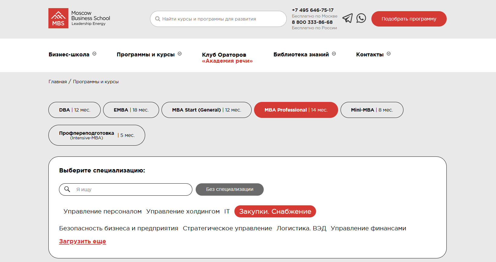- ✅ Официальный сайт: mbschool.ru
- 💸 Цена: 329 000 ₽ (296 100 ₽ при онлайн-оплате в течение 3 дней).
- 💳 Рассрочка: 24 месяца, от 13 708 ₽ в месяц.
- 📚 Формат: дистанционное образование — видеолекции, семинары, вебинары, кейсы с тьютором, доступ к библиотеке, итоговые тесты.
- ⏳ Продолжительность: 14 месяцев.
- 📜 Документ: диплом MBA государственного образца + Diploma Supplement.
- 📝 Трудоустройство: знания для карьерного роста, усиление профессиональных компетенций в сфере закупок и снабжения.
- 🔷 Для кого подходит курс: для руководителей отделов закупок, специалистов контрактных служб, директоров компаний и предпринимателей, которые хотят повысить квалификацию и управленческие навыки.
Особенности:
Программа ориентирована на практику и полностью соответствует профессиональным стандартам, утвержденным Министерством труда РФ. Обучение проходит онлайн в удобном формате, что позволяет совмещать учебный процесс с работой. Студенты получают доступ к обширной базе учебных материалов и могут участвовать в дополнительных программах повышения квалификации. Образовательный процесс включает деловые игры, стратегические квесты и реальные кейсы для развития практических навыков. Участники могут выбирать удобный график обучения, что делает дистанционную форму особенно комфортной. По окончании курса слушатели получают диплом MBA и становятся частью бизнес-клуба выпускников школы. Образование направлено на развитие управленческих компетенций и освоение современных методов управления закупочными процессами.
Чему учатся студенты:
- Разрабатывать стратегии закупки и снабжения
- Организовывать процессы закупок товаров и услуг
- Управлять отделом снабжения и закупок
- Выстраивать эффективное взаимодействие с поставщиками
- Проводить анализ эффективности закупочных процедур
- Применять современные методы управления финансами и персоналом
- Осуществлять контроль за выполнением контрактов
Преподаватели:
- Барняк Юрий Владимирович — бизнес-тренер, эксперт в области логистики, закупок и управления запасами, автор публикаций по оптимизации цепей поставок.
- Савина Надежда Викторовна — MBA, специалист в сфере ритейла и мерчандайзинга, эксперт-практик по развитию форматов торговых сетей.
Преимущества:
- Соответствие требованиям законодательства и профессиональным стандартам
- Гибкий дистанционный формат обучения
- Безлимитный доступ к дополнительным курсам Moscow Business School
- Развитие практических и управленческих навыков
- Доступ к закрытому бизнес-клубу выпускников
- Сопровождение куратора и помощь преподавателей на каждом этапе обучения
Отзывы учеников:
Слушатели отмечают высокий профессионализм преподавателей, насыщенную программу и возможность применить полученные знания в работе. Подчеркивается удобный дистанционный формат обучения и доступ к полезным материалам. Отзывы также выделяют поддержку тьюторов, которые помогают студентам в освоении сложных тем и прохождении итоговых тестов.
Перейти на официальный сайт курса10. Деятельность по осуществлению, контролю и управлению закупками — АНО ДПО «НАДПО»
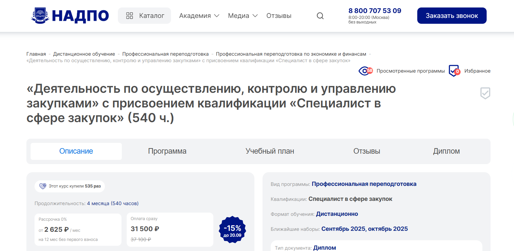- ✅ Официальный сайт: nadpo.ru
- 💸 Цена обучения: 31 500 ₽ (37 100 ₽ без скидки).
- 💳 Рассрочка: 0% на 12 месяцев от 2 625 ₽ в месяц без первого взноса.
- 📚 Формат: дистанционное обучение, лекции, тесты, практические задания, доступ к библиотекам ЛитРес и Библиоклуб.
- ⏳ Продолжительность: 4 месяца (540 часов).
- 📜 Документ: диплом о профессиональной переподготовке государственного образца.
- 📝 Трудоустройство: консультации HR-наставников, предложения от партнеров во время обучения.
- 🔷 Для кого подходит курс: руководителям отдела закупок, сотрудникам службы снабжения, специалистам по проведению закупок товаров и государственных закупок, а также тем, кто планирует повысить квалификацию и управленческие навыки.
Особенности:
Программа создана для тех, кто хочет освоить управление закупочными процессами и получить востребованную профессию в сфере государственных и корпоративных закупок. Обучение проходит онлайн в удобном формате, что позволяет совмещать процессу обучения с работой. Более 30% курса занимает практика: слушатели учатся на реальных примерах и разбирают процедуры закупок. Доступ к электронным образовательным материалам и системам дистанционного обучения предоставляется с первого дня. Удобный график обучения и возможность рассрочки без переплаты делают программу доступной для специалистов разных уровней. По окончании курса слушатели получают диплом государственного образца, который подтверждает квалификацию. Выпускники могут трудоустроиться в отделы снабжения, контрактные службы и государственные организации. Поддержка кураторов и преподавателей помогает пройти обучение без трудностей и успешно завершить курс.
Чему учатся студенты:
- Изучать основы контрактной системы и законодательства в сфере закупок
- Планировать и организовывать процессы снабжения
- Оценивать и выбирать поставщиков товаров, работ и услуг
- Проводить тендеры и процедуры закупок по 44-ФЗ и 223-ФЗ
- Анализировать закупочные процессы и управлять эффективностью службы закупок
- Применять информационные технологии и работать с электронными торговыми площадками
- Осуществлять мониторинг и аудит закупочной деятельности
Преподаватели:
- Тарасов Сергей Васильевич — кандидат психологических наук, доцент, стаж научной и практической работы с 2000 года
- Егорова Наталья Николаевна — кандидат психологических наук, стаж более 22 лет
- Челнокова Ирина Александровна — кандидат психологических наук, член Российской ассоциации КПТ, стаж с 2008 года
- Санжапова Эльмира Викторовна — кандидат педагогических наук, доцент, стаж работы с 2005 года
Преимущества:
- Обучение проводится в дистанционном формате без отрыва от работы
- Программа соответствует требованиям законодательства и ФГОС
- Доступ к учебным материалам и библиотекам для самостоятельного изучения
- Большой процент практических занятий с применением реальных кейсов
- Гибкая система оплаты: рассрочка без переплат и кэшбэк баллами
- Выдаются дипломы государственного образца
- Возможность прохождения курсов повышения квалификации и дополнительных образовательных программ
Отзывы учеников:
Слушатели отмечают удобную дистанционную форму, понятный процесс обучения и практическую направленность программы. Многие подчеркивают доступную стоимость курса и возможность совмещать занятия с работой. Положительно оценивают помощь в трудоустройстве и поддержку преподавателей на протяжении всего обучения.
Перейти на официальный сайт курса11. Специалист в сфере закупок (340 часов) — АНО «НИИДПО»
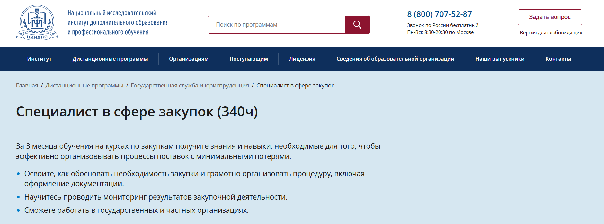- ✅ Официальный сайт: niidpo.ru
- 💸 Цена: 21 200 ₽ (полная стоимость — 31 900 ₽).
- 💳 Рассрочка: 0% до 12 месяцев от 1 770 ₽/мес, доступна оплата долями.
- 📚 Формат: дистанционное обучение, включает лекции, практические задания, тесты, онлайн-вебинары.
- ⏳ Продолжительность: 12 недель (ускоренное — 8 недель).
- 📜 Документ: диплом о профессиональной переподготовке государственного образца + сертификат компетенций.
- 📝 Трудоустройство: выпускники могут работать в отделах закупок и снабжения, контрактных службах, консалтинге.
- 🔷 Для кого подходит курс: новичкам без опыта, действующим специалистам отдела снабжения и руководителям службы закупок.
Особенности:
Программа сочетает теорию и практику в удобном дистанционном формате обучения. Все этапы, включая итоговую аттестацию, проходят онлайн, что позволяет слушателям совмещать образовательный процесс с работой. Курсы включают изучение современных стратегий закупки, контроль закупочных процессов и освоение методов управления закупками товаров и услуг. Слушатель получает доступ к учебным материалам бессрочно, а также к обширному архиву вебинаров. По окончании курса выдаются дипломы государственного образца, которые соответствуют требованиям законодательства. Программа построена с учетом профстандартов и подходит для специалистов корпоративных закупок, государственных закупок и коммерческой сферы. Обучение проходит на удобной дистанционной платформе, доступной с любого устройства.
Чему учатся студенты:
- Осуществлению и контролю проведения закупок товаров и услуг
- Формированию и ведению документации по процедурам закупок
- Анализу предложений поставщиков и выбору оптимальных решений
- Исполнению государственных контрактов по 44-ФЗ и 223-ФЗ
- Использованию информационных технологий в управлении закупками
- Проведению мониторинга и оценки эффективности закупочной деятельности
Преподаватели:
- Эксперты-практики института — кандидаты наук, специалисты с опытом работы в государственных и корпоративных структурах.
Преимущества:
- Удобная дистанционная форма обучения без отрыва от работы
- Бессрочный доступ к учебным материалам и архиву вебинаров
- Практические задания с обратной связью от преподавателей
- Документы государственного образца, соответствующие профстандартам
- Выгодная цена со скидкой и возможностью рассрочки
- Программа разработана с учетом требований контрактных служб
Отзывы учеников:
Слушатели отмечают удобный формат обучения, полезные материалы и практические задания. Многие подчеркивают, что после прохождения курсов повысили свой профессиональный уровень и смогли устроиться в отделы снабжения и службы закупок. Преподаватели получают высокую оценку за опыт и качественную обратную связь.
Перейти на официальный сайт курса12. Деятельность по осуществлению, контролю и управлению закупками — Национальный институт переподготовки и повышения квалификации кадров в сфере экономики и финансов
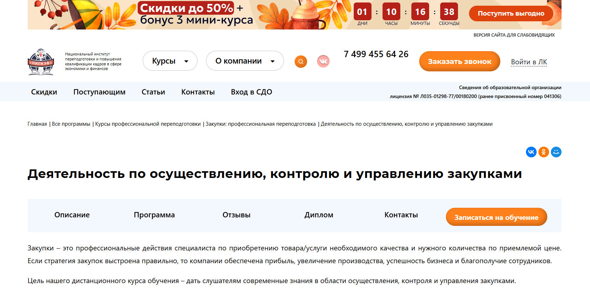- ✅ Официальный сайт: nipkef.ru
- 💸 Цена: 54 600 ₽ (со скидкой 24%).
- 💳 Рассрочка: доступна от 4 550 ₽/мес от банков-партнеров Т-Банк и Сбер на срок до 35 месяцев, 0% переплаты.
- 📚 Формат: дистанционное образование: видеолекции, учебные материалы, тесты, практические задания, вебинары.
- ⏳ Продолжительность: 540 часов (4 месяца).
- 📜 Документ: диплом о профессиональной переподготовке государственного образца.
- 📝 Трудоустройство: выпускники могут работать в отделах закупок и снабжения государственных и коммерческих организаций, оказывать услуги предпринимателям.
- 🔷 Для кого подходит курс: специалистам по закупкам, бухгалтерам, руководителям отделов снабжения, предпринимателям, выпускникам финансовых направлений.
Особенности:
Программа сочетает в себе теорию и практику в закупочной сфере и проходит онлайн в удобном формате обучения. Образовательный процесс построен так, чтобы студенты могли совмещать обучение с работой. Слушатели получают доступ к системе дистанционного обучения, где есть лекции, методические пособия и практические задания. Курс ориентирован на формирование профессиональных навыков в области управления закупками и проведения процедур закупок. По окончании курса слушатель получает диплом, который подтверждает уровень квалификации и соответствие требованиям законодательства. Программа помогает освоить стратегии закупки, изучить основы антимонопольного регулирования и методы управления закупочными процессами. Студенты учатся эффективному взаимодействию с поставщиками и применению информационных технологий в контрактных службах. Благодаря удобному графику обучения прохождение курсов доступно даже занятым специалистам.
Чему учатся студенты:
- Составлять планы закупок и управлять процессами снабжения
- Осуществлять поиск и выбор поставщиков
- Проводить закупки товаров и услуг с учетом законодательства
- Заключать и исполнять контракты
- Использовать информационные технологии и электронные торговые площадки
- Проводить мониторинг, аудит и контроль закупочной деятельности
- Владеть этикой делового общения и навыками переговоров
Преподаватели:
- Преподаватели — эксперты-практики в сфере государственных закупок и контрактной системы, с опытом ведения корпоративных закупок и управления закупочными процессами.
Преимущества:
- Дистанционный формат обучения с доступом к учебным материалам 24/7
- Возможность рассрочки без переплат
- Соответствие программы требованиям законодательства РФ
- Практические задания и кейсы для закрепления знаний
- Диплом государственного образца после окончания курса
- Удобный график обучения без отрыва от работы
Отзывы учеников:
Студенты отмечают профессионализм преподавателей, доступное объяснение сложных тем и удобный дистанционный формат. Многие подчеркивают практическую пользу программы для работы в отделах закупок и снабжения. Отдельно отмечается гибкий график и возможность оплаты в рассрочку.
Перейти на официальный сайт курса13. Управление государственными и муниципальными закупками по 44-ФЗ для руководителя — Контур.Школа
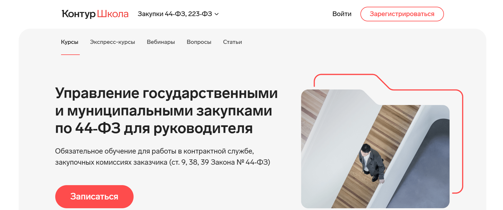- ✅ Официальный сайт: school.kontur.ru
- 💸 Цена: 10 710 ₽ (старая цена 11 900 ₽, действует скидка 10% при онлайн-оплате).
- 💳 Рассрочка: возможна оплата в рассрочку от 894 ₽/мес.
- 📚 Формат: видеоуроки, практические кейсы, тестирование, доступ к материалам.
- ⏳ Продолжительность: 40 академических часов.
- 📜 Документ: удостоверение о повышении квалификации государственного образца.
- 📝 Трудоустройство: подтверждение квалификации для работы в контрактной службе и закупочных комиссиях.
- 🔷 Для кого подходит курс: руководителям организаций, директорам ГУП и МУП, специалистам контрактной службы, председателям закупочных комиссий.
Особенности:
Программа охватывает все ключевые аспекты управления закупками: от планирования до заключения и исполнения контрактов. Обучение проводится в дистанционном формате с использованием современных методов подачи материала. Теория подкреплена разбором реальных кейсов, что помогает освоить практические навыки проведения закупок товаров и услуг. Курс учитывает последние изменения законодательства в сфере закупок, включая требования к комиссиям и контрактным службам. Образовательный процесс адаптирован под удобный график обучения, что позволяет совмещать его с профессиональной деятельностью. Участники получают доступ к учебным материалам и консультациям экспертов. Для получения удостоверения необходимо успешное прохождение итогового теста. Такой подход помогает специалистам укрепить профессиональные компетенции и повысить эффективность работы в закупочной сфере.
Чему учатся студенты:
- Организовывать и проводить процедуры закупок с учетом норм законодательства
- Формировать контрактную службу и распределять обязанности сотрудников
- Планировать закупки и вести отчетность заказчика
- Применять правила национального режима и квотирования
- Заключать, изменять и расторгать контракты по правилам 44-ФЗ
- Определять поставщика и проводить контроль исполнения договора
- Изучать меры ответственности и способы защиты интересов заказчика
Преподаватели:
- Светлана Сафина — сертифицированный преподаватель в сфере закупок по 223-ФЗ и 44-ФЗ, к.ю.н.
- Юлия Межникова — эксперт по закупкам, адвокат.
- Елена Пластинина — эксперт по регламентированным закупкам, член-корреспондент РАЕН.
- Владимир Бердников — эксперт по государственным и корпоративным закупкам (44-ФЗ, 223-ФЗ).
- Екатерина Маковлева — директор проектов «Сбербанк-АСТ», эксперт Контур.Школы, преподаватель ВШЭ и РАНХиГС.
- Лилия Султанова — доцент кафедры экономической теории, к.э.н.
Преимущества:
- Дистанционное образование в удобной форме
- Программа учитывает актуальные изменения законодательства
- Возможность совмещать обучение с профессиональной деятельностью
- Сертификат государственного образца после окончания курса
- Доступ к учебным материалам и поддержке 24/7
- Практика на реальных примерах из сферы закупок
Отзывы учеников:
Слушатели отмечают доступную подачу материала и удобный формат обучения. Положительные отзывы связаны с практическими кейсами и возможностью самостоятельно планировать график занятий. Многие подчеркивают ценность знаний для эффективного ведения отделом закупок и службы снабжения.
Перейти на официальный сайт курса14. Руководитель службы закупок и снабжения — Учебный центр «НЦПО»
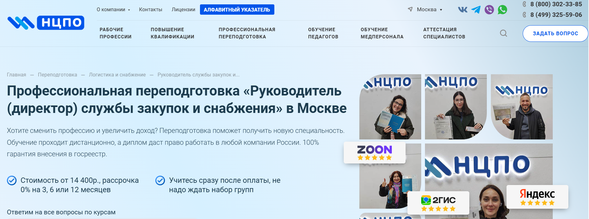- ✅ Официальный сайт: ncpo.ru
- 💸 Цена: от 14 400 ₽ (скидка 2 500 ₽ при оплате в день заказа)
- 💳 Рассрочка: 1 200 ₽/мес - 0% на 3, 6 или 12 месяцев
- 📚 Формат: дистанционное образование, онлайн-платформа, лекции, практические задания, тесты, доступ 24/7
- ⏳ Продолжительность: от 250 до 1600 часов
- 📜 Документ: диплом о профессиональной переподготовке государственного образца с внесением в ФРДО
- 📝 Трудоустройство: диплом подходит для работы в любых организациях России
- 🔷 Для кого подходит курс: специалисты со средним специальным и высшим образованием, руководители отдела закупок и снабжения, желающие повысить квалификацию или сменить профессию
Особенности:
Программа рассчитана на слушателей, которым необходимо освоить процессы снабжения и управления закупками с применением дистанционного формата обучения. Образовательный процесс проходит онлайн, что дает возможность совмещать обучение с работой и личными делами. Курсы включают теоретические модули, практические задания и тестирование без ограничений. Удобный график обучения позволяет проходить материалы в комфортном темпе, а выпускники получают диплом установленного образца. Слушатель получает доступ к учебным материалам навсегда, а в документы не вносится форма обучения. Образовательные программы соответствуют требованиям законодательства и профстандартов, что гарантирует признание диплома работодателями. Стоимость курса фиксирована и доступна в рассрочку. Все обучение проводится официально по договору с юридическими гарантиями.
Чему учатся студенты:
- Организовывать процедуры закупок и планировать процессы снабжения
- Применять методы управления закупочными процессами
- Анализировать рынок поставщиков и проводить тендеры
- Формировать стратегии закупки и планирования бюджета
- Изучать законодательство о государственных и муниципальных закупках (44-ФЗ, 223-ФЗ)
- Разрабатывать документацию и вести отчетность отдела закупок
Преподаватели:
- Терешков Александр Леонидович — генеральный директор УЦ «НЦПО»
- Грезнева Диана — преподаватель с опытом работы в сфере корпоративных закупок
- Малкова Анна — специалист по управлению логистикой и снабжением
Преимущества:
- Удобная дистанционная форма обучения с доступом 24/7
- Выдаются дипломы государственного образца
- Программа учитывает требования профстандартов и законодательства
- Стоимость обучения ниже средней по рынку с возможностью беспроцентной рассрочки
- Бесплатная доставка документов и прозрачные условия договора
- Официальная лицензия Министерства образования
Отзывы учеников:
Слушатели отмечают удобный формат обучения и понятный учебный процесс. Многие подчеркивают, что курсы помогают освоить практические навыки проведения закупок и управления отделом снабжения. В отзывах положительно оценивают доступность материалов, юридические гарантии и получение диплома, который принимают работодатели. Отмечают также вежливую работу менеджеров и поддержку на всех этапах обучения.
Перейти на официальный сайт курсаБесплатные ресурсы по бучению закупкам и снабжению для менеджеров, руководителей и директоров
Отдельные вопросы по контрактной системе в сфере закупок, бесплатно – Контур Школа
✅ Официальный сайт: school.kontur.ruОписание и особенности:
- Бесплатная программа позволяет ознакомиться с базовыми принципами контрактной системы и правилами проведения закупок по 44-ФЗ и 223-ФЗ.
- Обучение проходит онлайн, что удобно для специалистов отдела снабжения и руководителей отдела закупок.
- Слушатели изучат порядок выбора поставщика, планирование закупок и оформление контрактов.
- Курс подходит сотрудникам служб закупок, которые хотят повысить квалификацию и освоить новые методы управления закупочными процессами.
- Предусмотрен тест из 4 вопросов для проверки полученных знаний и практических навыков.
- Дистанционная форма обучения обеспечивает доступ к учебным материалам в любое удобное время.
- Программа помогает получить практическое представление о процедурах закупок и особенностях взаимодействия заказчика с поставщиком.
- После окончания обучения слушатель получает понимание стратегий закупки и может применять полученные знания в профессиональной деятельности.
Кто такой директор по закупкам?
Директор по закупкам — это руководитель высшего звена, который отвечает за стратегию снабжения компании товарами, материалами и услугами. Его главная задача — обеспечить бизнес необходимыми ресурсами по оптимальной цене, сохранив качество и сроки поставок. Фактически, это связующее звено между рынком поставщиков и внутренними потребностями компании.
Что делают руководители по закупкам и чем занимаются?
Функционал этой должности обширен, и включает как стратегические, так и операционные задачи:
- разработка стратегии закупок и выбор поставщиков;
- ведение переговоров и заключение контрактов;
- контроль исполнения договоров;
- оптимизация логистических процессов;
- анализ рынка сырья и товаров;
- управление бюджетом на закупки;
- снижение рисков сбоев поставок.
Кроме того, директор по закупкам отвечает за построение долгосрочных партнерских отношений с поставщиками, а также за внедрение цифровых решений в систему снабжения.
Что должен знать и уметь директор по закупкам и снабжению?
Современный специалист в этой области должен обладать широким кругом знаний и компетенций:
- Экономика и финансы: умение работать с бюджетами, планировать расходы, анализировать прибыль и убытки.
- Логистика и снабжение: знание основ международных поставок, таможенного законодательства и транспортных схем.
- Управление персоналом: навыки построения команды и мотивации сотрудников отдела закупок.
- Аналитика: способность изучать рынок, прогнозировать цены и находить выгодные предложения.
- Юриспруденция: понимание договорного права и условий контрактов.
- Soft skills: коммуникабельность, стрессоустойчивость, лидерские качества.
Востребованность и зарплаты директоров по закупкам в России
Директора по закупкам остается одной из ключевых в крупных компаниях. Востребованность специалистов особенно высока в сферах:
- ритейл и дистрибуция;
- промышленность и производство;
- строительство;
- IT и телеком;
- фармацевтика и FMCG.
Зарплаты зависят от региона, масштаба бизнеса и уровня ответственности. В среднем по России директор по закупкам зарабатывает от 200 000 до 500 000 рублей в месяц. В Москве и Санкт-Петербурге уровень дохода может превышать 600 000 рублей, особенно в международных корпорациях.
Как стать директором по закупкам и где учиться?
Чтобы построить карьеру в этой сфере, необходимо сочетание образования, опыта и профессиональных навыков:
- Образование: высшее образование в области экономики, менеджмента, логистики или международной торговли.
- Повышение квалификации: курсы по закупкам, supply chain management, бизнес-аналитике.
- Опыт работы: карьера обычно начинается с позиции специалиста по закупкам или менеджера по снабжению.
- Международные сертификаты: CIPS, APICS, PMP — ценятся у крупных работодателей.
Карьерные перспективы руководителей по закупкам и снабжению
Должность директора по закупкам может стать отправной точкой для дальнейшего карьерного роста. Наиболее перспективные направления:
- переход в топ-менеджмент на позиции операционного или генерального директора;
- управление международными закупочными подразделениями;
- открытие консалтингового бизнеса в сфере снабжения.
Что включает обучение для директора по закупкам?
Обучение для директора по закупкам охватывает полный спектр тем: управление корпоративных закупок, стратегиях закупки, процессами снабжения и методами управления службой закупок. Слушатели изучают проведение закупок товаров, выбор поставщиков, проведение тендеров и контроль эффективности закупочных процессов. Также внимание уделяется изменениях законодательства в сфере государственных закупок и корпоративных стандартов.
Какие преимущества дает дистанционное обучение руководителю по закупкам и снабжению?
Дистанционное образование позволяет проходить обучение в удобном формате обучения, сочетая учебный процесс с профессиональной деятельностью. Такой подход дает удобный график обучения, доступ к учебным материалам и возможность изучать программы повышения квалификации в дистанционных курсах. Это особенно важно для руководителей отдела закупок и службы снабжения.
Как проходит обучение в дистанционном формате?
Обучение проводится онлайн через системы дистанционного образования. Слушатели получают доступ к дистанционным образовательным платформам, где размещены учебные материалы, видеолекции и задания. Образовательный процесс строится таким образом, чтобы обучение проходит по гибкому графику, что позволяет совмещать учебу с работой в отделом закупок или снабжения.
Какие курсы повышения квалификации предлагаются для руководителей отдела закупок?
Для руководителей отдела закупок предлагаются курсы повышения квалификации, которые включают изучение процедур закупок, стратегий управления закупочными процессами, анализа эффективности поставок и проведения процедуры государственных закупок. Программы повышения квалификации помогают освоить практические навыки и профессиональные компетенции, необходимые для успешного управления корпоративных закупок.
Какие документы выдаются после окончания обучения по управлению в сфере закупок и снабжения?
После успешного прохождения итоговых испытаний слушателям выдается удостоверение о повышении квалификации или диплом государственного образца. Многие выпускников получает дипломы и удостоверения, подтверждающие профессиональный уровень и соответствие требованиям законодательства. Получение диплома открывает дополнительные карьерные возможности в закупочной сфере.
Какую роль играет практика в обучении директора по закупкам?
Программы включают практические задания, кейсы по ведению закупок товаров и услуг, а также разбор реальных примеров проведения тендеров. Практический опыт позволяет слушателям получить практические навыки и научиться применять знания в управлении службой снабжения или контрактных служб. Это помогает достигнуть высокого уровня профессиональных компетенций.
Для кого предназначено обучение управления по закупкам и снабжению?
Обучение предназначено для специалистов отдела снабжения, руководителей службы закупок, контрактных служб, а также для менеджеров коммерческой сферы и логистики. Программы ориентированы на тех, кто хочет повысить квалификацию, пройти профессиональную переподготовку или получить новые профессиональные навыки в закупочной сфере.
Какие знания получает слушатель во время прохождения курсов по закупкам и снабжению?
Слушатель получает знания в области управления закупками, стратегиях закупки, основах проведения процедуры закупок, планирования и анализа эффективности закупочных процессов. Также слушатели получают полезную информацию о взаимодействии с поставщику, изменениях законодательства и методах управления закупочными рисками.
Сколько стоит обучение для директора по закупкам?
Стоимость курса зависит от программы, учебного центра и сроков обучения. Обычно стоимость обучения рассчитывается исходя из продолжительности образовательного процесса, уровня преподавателей и формата обучения. Дистанционные образовательные программы, как правило, имеют более доступными стоимостью по сравнению с очных курсами.
Какие формы обучения предлагаются?
Слушатели могут выбрать удобную дистанционную форму или пройти обучение в учебных центрах с очных форматом. Наиболее востребованным считается дистанционным форматом, так как обучение проходит онлайн, что дает возможность гибкого графика обучения и совмещения учебного процесса с профессиональной деятельностью.
Можно ли пройти обучение с учетом специфики государственных закупок?
Да, программы повышения квалификации включают отдельные направления, посвященные сфере государственных закупок и муниципальных контрактов. Слушатели изучают требования законодательства 44-ФЗ и 223-ФЗ, особенности проведения закупок товаров и услуг для государственных нужд, а также управления государственных контрактов.
Какие преимущества дает прохождение курсов по управлению закупками в дистанционных образовательных программах?
Дистанционные курсы позволяют получать знания любым удобным способом, использовать современные информационных технологии и учебные материалы. Участнику предоставляют доступ к платформы с лекциями, кейсами и заданиями. Программы повышения квалификации обеспечивают успешное прохождение обучения и получение диплома государственного образца.
Кто ведет обучение и какие преподаватели участвуют?
Обучение проводят опытные преподавателями и эксперты в сфере закупок и снабжения. Они делятся практическим опытом управления закупочными процессами, проведения тендеров и взаимодействия с поставщиками. Это позволяет слушателям освоить необходимые навыки и получить полезные материалы для работы в корпоративных закупках.
Что дает успешное прохождение курсов по закупкам для карьеры?
Успешное прохождение курсов и получения диплома открывает новые карьерные возможности: слушатели могут претендовать на должность директора по закупкам, руководителей отдела снабжения, контрактных служб или менеджеров по корпоративных закупок. Это значительно повышает профессиональный уровень и конкурентоспособность специалиста на рынке образовательных услуг.
Как организован процесс прохождения итоговых испытаний для директоров по закупкам?
После завершения курса слушатели проходят итоговую аттестацию в виде тестирования или защиты проектов. Прохождения итоговых экзаменов является обязательным этапом для получения удостоверения или диплома. Итоговые испытания подтверждают уровень освоения программы повышения квалификации и готовность слушателя к профессиональной деятельности.
Можно ли пройти профессиональную переподготовку по направлению «директор по закупкам»?
Да, существует возможность пройти профессиональную переподготовку, которая дает право работать в закупочной сфере в качестве директора или руководителя отдела снабжения. Программы переподготовки включают изучение всех аспектов проведения закупок, управления закупочными процессами, взаимодействия с поставщиком и обеспечения государственных контрактов.
Какие преимущества дает дистанционное образование руководителей и директоров по закупкам перед очными курсами?
Дистанционные образовательные программы предоставляют удобный формат обучения, гибкий график, доступ к полезным материалам и возможность учиться из любой точки. Это позволяет руководителям отдела и специалистам службы снабжения совмещать учебный процесс с профессиональной деятельностью без отрыва от работы.
------------------------------------------------
Реклама. Информация о рекламодателе по ссылкам в статье.